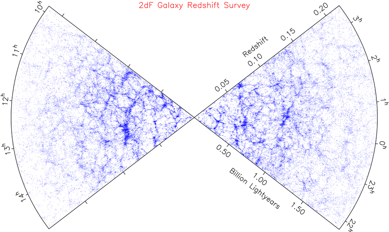
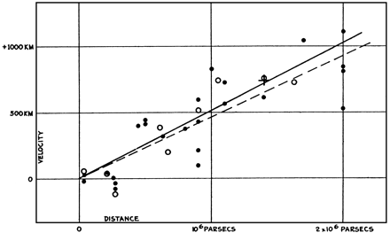
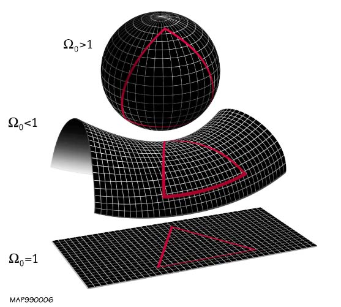

Stockholm University · Department of Astronomy
AS5003 (Cosmology) HT26
Lecture 8 (26 Nov 2026)

Image credit: NASA
Distances to a source at redshift $z$ in the Benchmark Model
Practical information
- No lecture on Tuesday 1 December. Next lecture: Thursday 3 December, dark matter.
- Home assignment: Problem set 4 is due Thursday 3 December, in Canvas.
- Literature review: the written report is due Tuesday 15 December; the presentations are on Thursday 17 and Friday 18 December.
Today's plan
- The story so far: chapters 2–6 on one page
- The review, in three broad categories:
- Expansion, geometry and distances
- Dynamics, contents and model universes
- Predictions, observations and parameters
The story so far
Chapter 2 · Lecture 1, Lecture 2
The universe is expanding
- Cosmological principle: on scales above about 100 Mpc, the universe looks the same everywhere and in every direction.
- Hubble's law: galaxies recede with $\;v = H_0\,d$, $\;H_0 \approx 68$ km/s/Mpc.
- No centre: all distances grow by the same factor, $a(t)$.
- Hubble time: $\;t_H = 1/H_0 \approx 14$ Gyr.

2dF Galaxy Redshift Survey (Colless et al. 2001)

Hubble (1929), PNAS 15, 168
The story so far
Chapter 3 · Lecture 3
The Robertson–Walker metric
- $a(t)$: the scale factor, $a(t_0) = 1$. $\;r, \theta, \phi$: comoving coordinates.
- Light: $ds = 0$. A photon coming radially towards us: $\;c\,dt = a(t)\,dr$.
- Redshift: $\;1 + z = \dfrac{\lambda_\text{obs}}{\lambda_\text{em}} = \dfrac{1}{a(t_e)}$

Closed ($\kappa = +1$), open ($\kappa = -1$) and flat ($\kappa = 0$). Image: NASA / WMAP Science Team
The story so far
Chapters 3–4 · Lecture 3, Lecture 4
Distances in an expanding universe
- Proper distance at time $t$ (the length at fixed $t$): $\;d_p(t) = a(t)\,r$
- To a source whose light, emitted at $t_e$, reaches us today: $$r = d_p(t_0) = c\int_{t_e}^{t_0}\frac{dt}{a(t)}, \qquad d_p(t_e) = a(t_e)\,d_p(t_0) = \frac{d_p(t_0)}{1+z}$$
- Horizon distance: the proper distance to the farthest light we can see, emitted at $t = 0$: $$d_\text{hor}(t_0) = c\int_0^{t_0}\frac{dt}{a(t)}$$
Think-Pair-Share
Light from a galaxy at $z = 1$ reaches us today. When it left, the universe was…
Think alone, discuss with your neighbour, then share. Click an option to check.
the same size the light lost energy on the way
No. Redshift is the stretching of space while the light travels: $1 + z = 1/a(t_e)$.
half its present size
Yes. $a(t_e) = 1/(1+z) = 1/2$: all distances between galaxies were half as large.
twice its present size
No: backwards. The universe expands, so it was smaller in the past.
it depends on Ωm,0 and ΩΛ,0
The size does not: $a = 1/(1+z)$ in every universe. When the light left, $t_e$, does.
On the board
Four distances to one galaxy
Single-component universes, exercise 6
A light source at $z = 3$ in an Einstein–de Sitter universe, $\;a(t) = (t/t_0)^{2/3}$. In units of the Hubble distance $c/H_0$:
- How far has its light travelled to reach us?
- How distant is the source today?
- How distant was it when the light was emitted?
- How far would light emitted from us today have to travel to reach it?
Hint for (d): the comoving distance between us and the source does not change.
The story so far
Chapter 4 · Lecture 4
The equations for $a(t)$
Friedmann: $\;\left(\dfrac{\dot a}{a}\right)^2 = \dfrac{8\pi G}{3c^2}\,\varepsilon - \dfrac{\kappa c^2}{R_0^2\,a^2}$
Fluid: $\;\dot\varepsilon + 3\,\dfrac{\dot a}{a}\,(\varepsilon + P) = 0$
Acceleration: $\;\dfrac{\ddot a}{a} = -\dfrac{4\pi G}{3c^2}\,(\varepsilon + 3P)$
Equation of state: $\;P = w\,\varepsilon$ $\;\Rightarrow\;$ $\varepsilon(a) = \varepsilon_0\,a^{-3(1+w)}$
Two of the three equations are independent: the acceleration equation follows from the other two.
| Component | $w$ | $\varepsilon \propto$ |
|---|---|---|
| Matter | $0$ | $a^{-3}$ |
| Radiation | $1/3$ | $a^{-4}$ |
| Cosmological constant | $-1$ | $a^{0}$ |
The story so far
Chapters 4–5 · Lecture 4, Lecture 6
Critical density and $\Omega$
The critical density makes the universe flat: $\;\varepsilon_c(t) = \dfrac{3c^2H(t)^2}{8\pi G}$, $\;\Omega \equiv \dfrac{\varepsilon}{\varepsilon_c}$
- $\Omega_0 > 1$: $\kappa = +1$ · $\Omega_0 = 1$: flat · $\Omega_0 < 1$: $\kappa = -1$
The Friedmann equation with all components:
$$\frac{H^2}{H_0^2} = \htmlClass{c-hot}{\frac{\Omega_{r,0}}{a^4}} + \htmlClass{c-accent}{\frac{\Omega_{m,0}}{a^3}} + \htmlClass{c-good}{\Omega_{\Lambda,0}} + \htmlClass{c-soft}{\frac{1 - \Omega_0}{a^2}}$$Acceleration today: $\;q_0 = \Omega_{r,0} + \tfrac{1}{2}\,\Omega_{m,0} - \Omega_{\Lambda,0}$ (Lecture 7)
The story so far
Chapter 5 · Lecture 5
Universes with one component
| Universe | $a(t)$ | Age $t_0$ |
|---|---|---|
| Empty (Milne), $\kappa = -1$ | $t/t_0$ | $1/H_0$ |
| Matter (Einstein–de Sitter) | $(t/t_0)^{2/3}$ | $\frac{2}{3}\,H_0^{-1}$ |
| Radiation | $(t/t_0)^{1/2}$ | $\frac{1}{2}\,H_0^{-1}$ |
| $\Lambda$ (de Sitter) | $e^{H_0(t - t_0)}$ | $\infty$ |
Flat, one component with $w \ne -1$: $\;a \propto t^{2/(3+3w)}$, $\;t_0 = \dfrac{2}{3(1+w)}\,H_0^{-1}$.
Chapter 5 · Lecture 6
Universes with several components
In general, integrate numerically:
$$H_0\,t = \int_0^a \frac{da'}{\left[\Omega_{r,0}\,a'^{-2} + \Omega_{m,0}\,a'^{-1} + \Omega_{\Lambda,0}\,a'^2 + (1 - \Omega_0)\right]^{1/2}}$$- Matter + curvature: density is destiny. With $\Lambda$: Big Chill, Big Crunch, loitering, Big Bounce.
- The Benchmark Model: flat, $\Omega_{r,0} = 9.0\times10^{-5}$, $\Omega_{m,0} = 0.31$, $\Omega_{\Lambda,0} = 0.69$, $H_0 = 68$ km/s/Mpc; $t_0 = 13.7$ Gyr. Radiation, then matter, then $\Lambda$ dominate.
Think-Pair-Share
Going back in time, what happens to $\Omega_m$ in the Benchmark Model?
Think alone, discuss with your neighbour, then share. Click an option to check.
it grows as (1 + z)3, without limit
No. $\varepsilon_m$ grows as $(1+z)^3$, but the critical density $\varepsilon_c \propto H^2$ grows too. In a flat universe $\Omega_m \le 1$.
it stays at 0.31
No. $\varepsilon_\Lambda$ stays constant while $\varepsilon_m$ grows: going back, matter takes a larger share.
it rises towards 1, then falls as radiation takes over
Yes. $\Omega_m > 0.9$ for $2 \lesssim z \lesssim 300$. Radiation grows faster, $(1+z)^4$, and wins before $z \approx 3400$.
On the board · Problem set 3, problem 2
Does $\Omega_\text{total}$ change with time?
(a) If $\Omega_\text{total} = 1$ today, was it always 1? If $\Omega_\text{total} > 1$ today, was it always greater than 1?
Friedmann at any time, then divide by $H(t)^2$, with $\Omega = \varepsilon/\varepsilon_c$ and $\varepsilon_c = 3c^2H^2/(8\pi G)$:
$$H^2 = \frac{8\pi G}{3c^2}\,\varepsilon - \frac{\kappa c^2}{R_0^2\,a^2} \quad\Rightarrow\quad 1 - \Omega(t) = -\frac{\kappa c^2}{R_0^2\,a(t)^2H(t)^2}$$The right side never changes sign: $\kappa$ is fixed and $a^2H^2 > 0$. Flat stays flat ($\Omega = 1$), closed stays closed ($\Omega > 1$), open stays open.
On the board · Problem set 3, problem 2
The density parameters at $z = 999$
(b) $\Omega_{m,0} = 0.31$, $\Omega_{\Lambda,0} = 0.69$, $\Omega_{r,0} = 9\times10^{-5}$: find $\Omega_m$, $\Omega_\Lambda$ and $\Omega_r$ at $z = 999$.
Both $\varepsilon_i$ and $\varepsilon_c \propto H^2$ change:
$$\Omega_i(z) = \frac{\varepsilon_i(z)}{\varepsilon_c(z)} = \frac{\Omega_{i,0}\,(1+z)^{3(1+w_i)}}{E(z)^2}$$ $$E^2 = \htmlClass{c-hot}{\Omega_{r,0}(1+z)^4} + \htmlClass{c-accent}{\Omega_{m,0}(1+z)^3} + \htmlClass{c-good}{\Omega_{\Lambda,0}}$$| $1 + z = 1000$ | $\Omega_{i,0}(1+z)^{3(1+w_i)}$ | $\Omega_i(z = 999)$ |
|---|---|---|
| Matter | $3.1\times10^8$ | $0.775$ |
| Radiation | $9.0\times10^7$ | $0.225$ |
| $\Lambda$ | $0.69$ | $1.7\times10^{-9}$ |
| Sum | $E^2 = 4.0\times10^8$ | $1$ |
The story so far
Try it: what each model predicts
- At $z \ll 1$ all models agree: Hubble's law.
- Further away, each model predicts a different distance to the same $z$.
- So measuring distances tells us which model is our universe.
The story so far
Chapter 6 · Lecture 7
Measuring distances
Standard candle (known $L$), flux $f$:
$$d_L \equiv \left(\frac{L}{4\pi f}\right)^{1/2} = S_\kappa(r)\,(1+z)$$Flat: $d_L = d_p(t_0)\,(1+z)$
Standard yardstick (known $\ell$), angle $\delta\theta$:
$$d_A \equiv \frac{\ell}{\delta\theta} = \frac{S_\kappa(r)}{1+z}$$Flat: $d_A = d_p(t_0)/(1+z) = d_p(t_e)$
Distance modulus: $\;m - M = 5\log_{10}\left(\dfrac{d_L}{1\ \text{Mpc}}\right) + 25$
Type Ia supernovae at $z \gtrsim 0.3$ are fainter than in an empty universe: the expansion is speeding up.
Try it: what we can observe
- Standard candles give $d_L$, or $m - M$.
- Standard yardsticks give $d_A$.
- Each model predicts its own curve: compare with the data (supernovae, Lecture 7).
The story so far
Chapter 6 · Lecture 7
Fitting the parameters
- $H_0$: the slope of Hubble's law at small $z$, with distances calibrated by Cepheids.
- $q_0 = \Omega_{r,0} + \tfrac{1}{2}\Omega_{m,0} - \Omega_{\Lambda,0}$: supernovae at $z \gtrsim 0.3$ are fainter than for $q_0 = 0$, so $q_0 < 0$: the expansion is speeding up.
- The full curve $d_L(z)$ depends on $\Omega_{m,0}$ and $\Omega_{\Lambda,0}$: the supernovae allow a narrow band in the $(\Omega_{m,0}, \Omega_{\Lambda,0})$ plane (Lecture 7).
- With the CMB (later in the course): the flat Benchmark Model, with $H_0 = 68$ km/s/Mpc, $\Omega_{m,0} = 0.31$ and $\Omega_{\Lambda,0} = 0.69$.
The allowed region comes from statistical inference. You will get some experience of this in Problem set 4.
Union2.1 supernovae (statistical errors only). ★: the Benchmark Model.
Think-Pair-Share
A galaxy at $z = 2$ in a flat universe: which order is right?
Think alone, discuss with your neighbour, then share. Click an option to check.
dL < dp(t0) < dA
No: backwards. $d_L = d_p(t_0)(1+z)$ is the largest, $d_A = d_p(t_0)/(1+z)$ the smallest.
dA < dp(t0) < dL
Yes. With $1 + z = 3$: $d_A = d_p(t_0)/3$ and $d_L = 3\,d_p(t_0)$, whatever the contents, as long as the universe is flat.
All three are equal
No. Only at $z \ll 1$, where all distances agree (Hubble's law).
It depends on what the universe contains
The values do, the order does not. $d_p(t_0)$ depends on $\Omega_{m,0}$, $\Omega_{\Lambda,0}$, …, but the factors $(1+z)$ do not.
Think-Pair-Share
Can we see galaxies that are receding from us faster than light?
Think alone, discuss with your neighbour, then share. Click an option to check.
No nothing moves faster than light
No. Special relativity limits motion through space. The recession speed $H_0\,d_p(t_0)$ comes from the expansion of space, and can exceed $c$.
Yes we see many
Yes. In the Benchmark Model, every galaxy with $z \gtrsim 1.5$ has $d_p(t_0) > c/H_0$. Their light left when they were closer, and has been reaching us since (see the "Try it" on what each model predicts).
Only in an accelerating universe
No. In the Einstein–de Sitter universe too: $d_p(t_0) > c/H_0$ for $z > 3$.
Think-Pair-Share
The expansion is speeding up today. What must be true?
Think alone, discuss with your neighbour, then share. Click an option to check.
H is increasing with time
No. $\ddot a > 0$ means $\dot a$ grows, but $H = \dot a/a$ can still fall: in the Benchmark Model it falls towards $H_0\sqrt{\Omega_{\Lambda,0}}$.
ΩΛ,0 > Ωm,0
Not needed. That is $\Lambda$ dominating. Acceleration needs less: $q_0 < 0$.
ΩΛ,0 > Ωr,0 + Ωm,0/2
Yes. $q_0 = \Omega_{r,0} + \tfrac{1}{2}\Omega_{m,0} - \Omega_{\Lambda,0} < 0$, from the acceleration equation.
The universe is flat
No. Curvature does not enter $q_0$. The supernovae alone allow curved universes; the CMB (Lecture 11) shows ours is close to flat.
Two boards
Two boards, the same problems
- Both groups solve problems 1–3. Everyone must be able to explain them: I pick who defends.
- Swap: half of each group moves to the other board and checks it against their own solution; the other half defends.
- A solution shows the starting equation, each substitution, the final integral, and a check in a case you know.
Two boards
The distances you asked for
Problem 1 · Multiple components, exercise 4
Show that the comoving distance is
$$d_p(t_0) = \frac{c}{H_0}\int_{a_e}^{1}\frac{da}{\left[\Sigma_i\Omega_{i,0}\,a^{4-n_i}+(1-\Omega_{0})\,a^2\right]^{1/2}}$$$n_i = 4, 3, 0$ for radiation, matter, $\Lambda$. Check: flat, matter only.
Problem 2 · Observational distances, ex. 9(a)
Show that in a flat matter + $\Lambda$ universe
$$d_A = \frac{c}{H_0(1+z)}\int_1^{1+z}\frac{dx}{\left(\Omega_{m,0}x^3+\Omega_{\Lambda,0}\right)^{1/2}}$$Check: $\Omega_{m,0} = 1$.
Problem 3 · Observational distances, exercise 3. A galaxy at $d_p(t_0) = 1$ Gpc ($h = 0.7$) in a positively curved universe with $R_0 = 2c/H_0$: find $d_L$. Is it smaller or larger than in a flat universe? Why? How far away must an object be for $d_L$ to differ by more than 1% from the flat value?
Hint for problem 3: same $r$, same $z$; only the area of the sphere changes, $d_L = S_\kappa(r)\,(1+z)$ with $S_\kappa(r) = R_0\sin(r/R_0)$.
Common confusions
- The Hubble "constant" changes with time: $H(t) = \dot a/a$ is the Hubble parameter, and $H_0$ is its value today. $H(t)$ is the same everywhere at a given time.
- Hubble time $\ne$ age: $t_0 = 1/H_0$ only for the empty universe (Benchmark: $t_0 = 0.95/H_0$).
- Hubble distance $c/H_0$ $\ne$ horizon distance: the horizon is $c\int dt/a$ from the Big Bang (Benchmark: $3.2\,c/H_0$).
- Redshift is not a Doppler shift: it is the stretching of space while the light travels, $1 + z = 1/a(t_e)$.
- Accelerating $\ne$ $H$ growing: $\ddot a > 0$, but in the Benchmark Model $H$ still falls towards $H_0\sqrt{\Omega_{\Lambda,0}}$.
The story so far, again
Each box links to the slides where it was introduced.
Before next time
- Next lecture: Thursday 3 December (no lecture on Tuesday 1 December)
- Problem set 4 is due Thursday 3 December, in Canvas
- Read Ryden chapter 7: dark matter
- The exercise sheets of Lectures 2–7 are on Canvas: try the ones we did not do today.